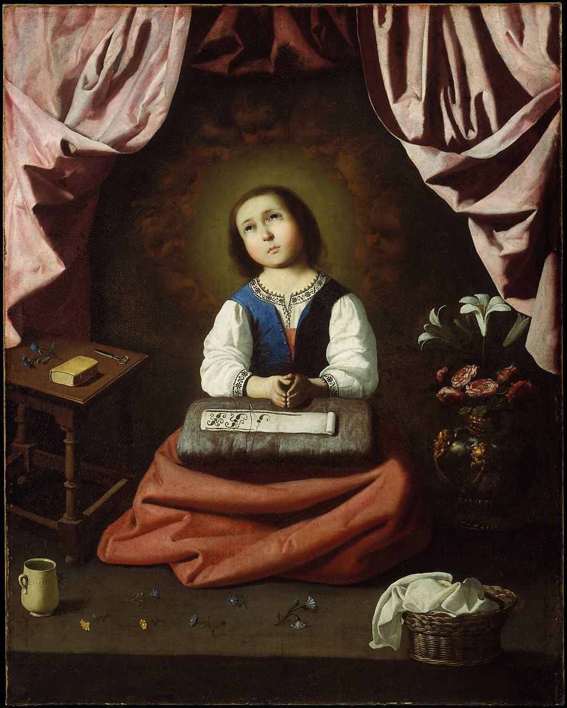

<head>
<meta charset="UTF-8" />
<meta name="keywords" content="drawing, painting" />
<meta name="description" content="drawings by Sunjy" />
<title>Sunjy</title>
<link rel="shortcut icon" type="image/x-icon" href="../../mImages/mCommon/favicon.ico" media="screen" />
<link rel="stylesheet" type="text/css" href="../../mCsses/mCommon/mCssA.css" />
<link rel="stylesheet" type="text/css" href="../../mCsses/mCommon/mCssB.css" />
<link rel="stylesheet" type="text/css" href="../../mCsses/mCommon/mCssC.css" />
<link rel="stylesheet" type="text/css" href="../../mCsses/mCommon/mCssD.css" />
<link rel="stylesheet" type="text/css" href="../../mCsses/mContent/mCssA.css" />
<link rel="stylesheet" type="text/css" href="../../mCsses/mContent/mCssB.css" />
<link rel="stylesheet" type="text/css" href="../../mCsses/mContent/mCssC.css" />
<link rel="stylesheet" type="text/css" href="../../mCsses/mContent/mCssD.css" />
</head>
<script type="text/javascript" src="../../mScripts/mContent/mContentAA.js" /></script>
<script type="text/javascript" src="../../mScripts/mContent/mContentAB.js" /></script>
<script type="text/javascript" src="../../mScripts/mContent/mContentAC.js" /></script>
<script type="text/javascript" src="../../mScripts/mContent/mContentAD.js" /></script>
<script type="text/javascript"></script> 
<script type="text/javascript">
document.write('<div class="mImgAbsolute"></div>');
/*
document.write('<p class="mFontSizeBColor" />From a white paper...</p>');
document.write('<table class="center"><tr><td>');
document.write('');
document.write('</td></tr></table>');
*/
</script>


<script type="text/javascript">
document.write('<p class="mFontSizeBColor" />The Young Virgin</p>');
document.write('<p class="mFontSizeSColor" />By Francisco de Zurbaran, ca. 1632–33. According to medieval legend, as a girl the Virgin Mary lived in the Temple in Jerusalem, where she devoted herself to praying and sewing vestments. This was a subject particularly popular in seventeenth-century Italian and Spanish paintings, where the little <br><br>Virgin—devout and busy at her tasks—served as a model of behavior for young girls. The delicate handling of the Virgin’s face and attention to detail in the still life elements, each neatly individuated and meticulously placed, are characteristic of Zurbarán’s early work.</p>');
document.write('<table class="center" /><tr><td>');
document.write('<br>Virgin—devout and busy at her tasks—served as a model of behavior for young girls. The delicate handling of the Virgin’s face and attention to detail in the still life elements, each neatly individuated and meticulously placed, are characteristic of Zurbarán’s early work." />');
document.write('</td></tr></table>');
</script>


